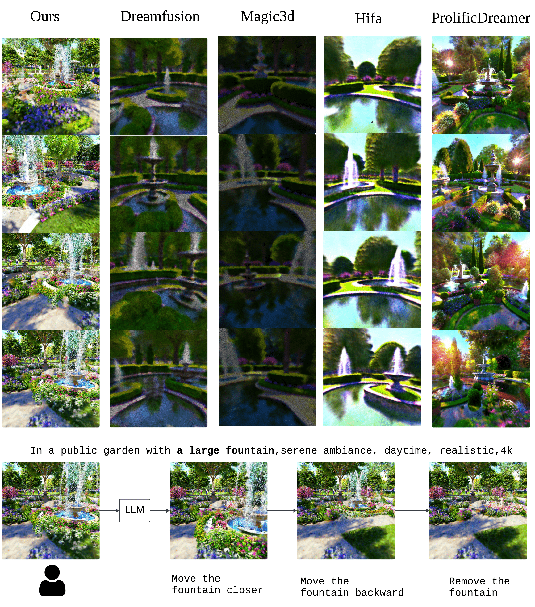
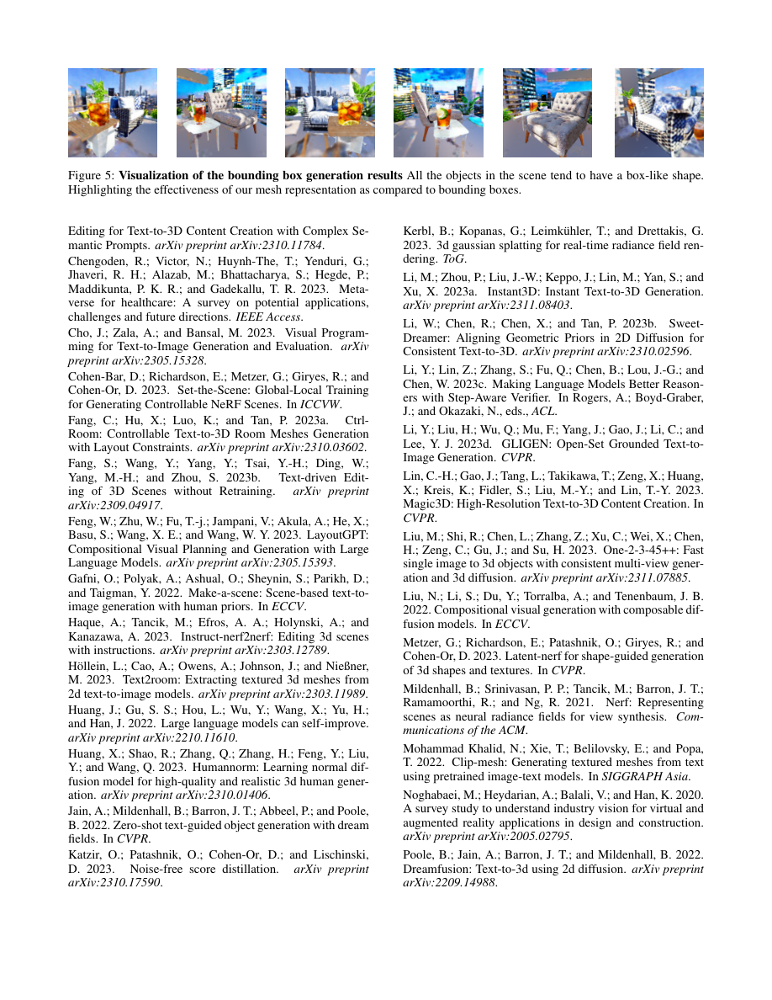

多物体 3D 场景不能只靠最终视图好看；布局、支撑、碰撞和后续编辑都需要被结构化。
ScenePlannerLLM 先产生可检查的 scene prior，SceneConstructor 再构建对象级 3D 内容并支持编辑。
论文有机制、图表、消融和用户研究支撑；它不是声称解决所有 Text-to-3D scene generation。


Core Claim
一个文本提示对人来说可以很清楚，对 Text-to-3D 系统却仍然不够明确。“一把流线型休闲椅，旁边有一张矮桌，桌上放着一杯冰茶”这句话至少包含三类对象、两个空间关系、一个支撑关系，以及一组形状预期。椅子不能只在一个视角里像椅子，杯子不能穿过桌面，用户后续说“把椅子移近一点”时，系统也应该知道哪一团几何属于椅子，哪一团属于桌子。
很多 diffusion-guided Text-to-3D 方法在单物体上可以生成很漂亮的结果，但多物体场景暴露的是另一类问题：系统被要求在同一个最终图像优化过程中同时解决外观、身份、布局、支撑、碰撞和可编辑性。一个视角里的渲染图可能看起来符合提示词，底层场景却不可检查。结果就会出现重复物体、视角不一致、对象边界混在一起，或者画面看起来完整但无法局部修改。
PhysiBuilder 的核心判断很朴素：多物体 3D 场景不应该直接从 prompt 跳到最终生成结果。系统应该先构造一个显式的 scene prior，也就是可检查、可修正、可编辑的中间结构。这个先验不是最终资产，而是告诉后续生成模块：场景里有哪些对象，它们大致是什么形状，位于三维空间的哪里，哪些支撑、相邻、碰撞和重力关系必须成立。生成因此被拆成两步：先把语言变成可检查的场景结构，再把结构变成可渲染的 3D 结果。
好看的视角可能掩盖坏的场景
论文里的公共花园例子把问题讲得很直观。给定一个“真实日间花园中有大型喷泉”的提示，DreamFusion、Magic3D、HiFA、ProlificDreamer 这类基线方法常常能生成像花园的画面，但喷泉这个对象在不同视角里会变得不稳定：有时像多个喷泉，有时相对道路的位置漂移，有时更像一个依赖视角的图像纹理，而不是稳定的 3D 对象。
这不是单纯的视觉质量问题，而是编辑问题。如果系统没有稳定的对象级表示，“把喷泉移近一点”这样的命令就会变得含糊。模型可以重新优化整幅场景，但花园、路径、水面、花草也可能一起改变。用户看到的是一个很奇怪的交易：生成前很自由，生成后很脆弱。
PhysiBuilder 把这种脆弱性视为表示问题。它在 NeRF 优化之前先创建一个规划交付物，再把每个生成对象绑定到局部表示。这里并不是要求 LLM 直接产出照片级几何，而是要求它先产出物理上说得通的布局，让 3D 生成模块有结构可依。
“看起来像”和“可编辑”不是同一件事。一个 view 里的 fountain 看起来正确，不代表系统知道 fountain 在哪里、占多大空间、是否和别的对象冲突、能不能单独移动。PhysiBuilder 的价值就在这里：它把可编辑性前置到场景表示里，而不是事后在 UI 上补一个按钮。
ScenePlannerLLM 和 SceneConstructor 的分工
PhysiBuilder 把 Text-to-3D 场景生成拆成两个模块：ScenePlannerLLM 和 SceneConstructor。
ScenePlannerLLM 负责把自然语言 prompt 转成 3D scene prior。它从文本里抽取对象和关系，采样多个粗略布局，选择更一致的候选方案，再用物理检查进行修正。输出结果是一个场景级表示：对象身份、相对位置、粗体积 primitive、支撑关系和空间占用。
SceneConstructor 负责把这个先验变成可渲染的 3D 场景。它不是把整个前景当成一团不可分的 neural field，而是为每个前景对象建立一个 instance-specific local NeRF，再把这些对象 NeRF 和 background NeRF 组合起来。ScenePlannerLLM 给出的 layout 提供平移和旋转，让对象局部坐标能够映射到同一个场景坐标系。
这个拆分很关键，因为两个模块处理的是不同不确定性。LLM 擅长处理语言和常识结构，例如杯子通常在桌子上，两把椅子围绕餐桌，休闲椅不能只用一个方盒表达。NeRF 优化擅长外观和视角合成。系统没有要求一个最终图像优化循环从渲染结果里同时推断所有对象关系。
实际效果是一个接近 scene graph 的可编辑 scaffold。用户想平移、旋转、复制或删除某个对象时，操作可以落到对象级 layout 和渲染变换上。SceneConstructor 可以渲染修改后的组合，而不必从头重新训练整幅场景。
ScenePlannerLLM 真正在规划什么
PhysiBuilder 没有让 LLM 直接输出最终 mesh。ScenePlannerLLM 使用的是粗体积 primitive 表示：一个场景由多个对象组成，每个对象由若干类似 cuboid 的 primitive 组成。这个选择有意保持克制。primitive 足够简单，LLM 可以生成；又比单个 bounding box 丰富，能描述对象大致范围、部件和空间占用。
规划过程可以分成三层。
第一层是 scene graph。对象成为节点，空间关系成为边。一个“椅子在桌子旁，杯子在桌上”的 prompt 包含邻近、支撑和身份关系。scene graph 在任何渲染开始之前把这些关系显式化。
第二层是 self-consistency 采样。ScenePlannerLLM 从图结构里生成多个体积布局候选，再选择更能保留对象关系的方案。这里是 LLM 比较合适的用途：不是相信一次输出，而是让模型提出多个结构化解释，再筛出更稳定的版本。
第三层是物理检查。PhysiBuilder 用 collision 和 gravity 作为外部 evaluator。collision 检查对象是否发生不合理重叠，gravity 检查对象是否落在地面上，或者在被描述为“放在上面”时是否确实有支撑。如果候选布局违反这些检查，系统会把问题摘要回 LLM refinement loop。
重点是这些检查发生在最终 3D 优化之前。物理合理性不再是渲染完成后主观点评的一句话，而是中间交付物的一部分。这里的 physics 不是完整物理仿真，更像低成本结构审查：是否穿模，是否悬空，是否有支撑关系。对 Text-to-3D 来说，这已经能提前消除很多本来会留到最后才暴露的问题。
对象局部化之后，编辑才有抓手
SceneConstructor 接收规划好的布局，并训练对象级表示。每个前景对象都有自己的 local NeRF，整幅场景通过背景 NeRF 加多个对象 NeRF 渲染出来。渲染时，射线会按照 layout 变换到每个对象的局部坐标系。
这就是 PhysiBuilder 能支持对象级编辑的原因。如果椅子由自己的 local NeRF 表示，那么改变它在场景里的位置可以被表达为一次 transform update，而不是“请重新生成一张图”。旋转、删除、复制也是同样逻辑。系统可以在渲染时跳过一个对象，调整它的旋转，或者在新的平移和旋转下加入另一个实例。
论文还提出了 “train with edits” 的思路。训练时，系统让 planner 生成一致的 layout edits，并把这些修改过的布局放进渲染和优化过程。这是在处理图像空间优化里常见的问题：前景和背景容易纠缠。如果桌子边缘、枕头纹理或某个装饰物被错误吸收到别的表示里，后续编辑对象时就会产生破损。用合理编辑参与训练，可以推动对象局部表示在初次生成后仍然可用。
这并不会消除所有交付物瑕疵。它提供的是更强的可编辑偏置。真正重要的工程动作是：把编辑当成表示契约的一部分，而不是生成结束后的补丁。
实验证据说明了什么
PhysiBuilder 和 DreamFusion、HiFA、Magic3D、ProlificDreamer 等 Text-to-3D 基线做了对比。定性实验覆盖浴室、卧室、餐厅、公共花园等多物体场景，重点观察对象身份是否能跨视角保持一致，而不是在每个视角里变成不同近似。
3D 场景生成的用户研究让参与者从五个视角评价五个 prompt，评分范围是 1 到 10。PhysiBuilder 在 scene quality 上得到 7.8，在 text alignment 上得到 7.3，在 identity consistency 上得到 8.5。ProlificDreamer 在 physical plausibility 和 scene composition 上更强，分别是 7.4 和 8.1，而 PhysiBuilder 在这两项是 7.2 和 7.7。这个混合结果很重要：PhysiBuilder 的优势不是“所有审美维度都赢”，而是在对象身份、文本对齐和可编辑结构的组合上更突出。
layout 评测把规划问题单独拿出来看。论文构造了 25 个场景 prompt，每个包含 4 到 5 个常见对象，并检查生成布局是否满足 gravity 和 collision 约束。普通 prompting 在 gravity 上是 0.64，在 collision 上是 0.88。Chain-of-thought prompting 是 0.60 和 0.80。去掉 physics checks 的版本是 0.64 和 0.68。完整 PhysiBuilder planning loop 达到 0.88 和 0.96。
另一个 layout 用户研究评估 physical plausibility、scene quality 和 scene composition。普通 prompting 得分为 6.1、5.8、5.7；Chain-of-thought 提升到 6.5、6.2、6.4；PhysiBuilder 得到 7.8、7.8、8.0。
这些数字支持的是一个具体结论：提升来自把 layout 变成一等交付物并检查它，而不是简单让 LLM “多思考几步”。CoT 本身没有解决物理布局问题。真正改变中间表示质量的是 layout 生成、self-consistency、gravity/collision 检查和 refinement 的闭环。
为什么这对创作流程重要
编辑能力让 scene prior 的价值超过了一个生成技巧。一个 Text-to-3D 模型可以产出惊艳的单次结果，但如果真实用户要迭代，它仍然很难用。用户会移动桌子、删除喷泉、复制椅子、旋转对象，或者看到第一版后要求新的布局。
PhysiBuilder 在论文里支持四类编辑：translation、rotation、object removal 和 duplication。ScenePlannerLLM 解释用户指令并更新 layout，SceneConstructor 在更新后的对象变换下渲染场景。因为前景对象有 local NeRF 表示，编辑不需要重新 fine-tune 整个场景。
公共花园例子展示了这个循环：从有大型喷泉的花园开始，用户可以要求把喷泉移近、移远或移除。输出改变的是对象级安排，而不是把每次请求都当成全新的场景。这更接近用户对 3D 编辑器的期待，也正是纯 Text-to-Image 或单次 Text-to-3D 流程难以做到的行为。
更大的原则是：生成系统如果保留了后续修改需要的决策，它就更有用。在 PhysiBuilder 里，这些决策包括对象身份、对象范围、layout transform 和物理关系。最终渲染当然重要，但可编辑的中间状态才让用户能继续工作。
消融实验给出的边界
volumetric primitive 的消融实验很小，却很说明问题。当 layout 使用过于粗糙的 bounding boxes，无法表达休闲椅的形状时，生成结果会倾向盒子状。这既支持显式先验的价值，也提醒先验不能太粗。一个 bounding box 可以说明对象在哪里，却可能抹掉让椅子像椅子的部件结构。PhysiBuilder 的 primitive 表示是在可生成和可表达之间做折中。
physics ablation 也很有信息量。去掉物理检查后，gravity 和 collision 得分下降，说明 LLM 流畅地产出布局并不等于布局可靠。在这个系统里，LLM 不是 oracle，而是一个 proposal engine。它提出候选，外部检查器发现问题，LLM 再根据问题修正。
这是项目最可迁移的部分：planner 有用，是因为它生成了可检查对象；检查有用，是因为 planner 能回应检查；renderer 有用，是因为它接收的是结构化先验，而不是一句松散愿望。
限制和可信边界
PhysiBuilder 没有彻底解决 Text-to-3D 场景生成。论文里有几个限制必须讲清楚。
第一是优化成本。除了 ScenePlannerLLM，实验在单张 NVIDIA A6000 GPU 上运行，每个场景大约需要 60 分钟训练。系统使用 Stable Diffusion v2.1 做 Text-to-Image guidance，使用 GPT-4 Turbo 做 LLM 组件。这不是即时资产生成，而是一个成本较高的研究 pipeline。
第二是视觉质量。和其他 SDS-based 方法一样，PhysiBuilder 仍可能生成模糊或不清晰的背景形状。物理检查过的 scene prior 改善结构，但不保证每个局部渲染都清晰。
第三是形状表达能力。ScenePlannerLLM 使用 volumetric primitives，论文也指出圆角对象或明显偏离方形、矩形的物体仍然困难。盒子状 lounge chair 的消融结果就是提醒：如果先验无法充分表达对象，下游生成会继承这个弱点。
第四是物理检查范围。gravity 和 collision 很有意义，但不是完整物理世界。它们不能完整刻画材质、稳定性、功能可达性、尺度真实性或细接触几何。PhysiBuilder 的 physical prior 更适合被理解为可检查的场景布局约束系统，而不是仿真器。
这些限制反而让结论更可信。PhysiBuilder 的价值不是证明 Text-to-3D 已经被解决，而是证明多物体生成需要一个可检查、可修正、可编辑的结构层。这个结构层能减少一类错误，但不能替代高质量 geometry、rendering、physics simulation 或用户审美判断。
可迁移的设计原则
PhysiBuilder 背后的原则可以不用任何模型名来表达：把计划和渲染分开，并让计划可检查。
单物体 prompt 里，没有显式计划有时还能容忍。一个龙、一只球鞋、一个陶瓷杯可以被当作一个对象优化，用户可能只关心最终 mesh 或图片。多物体场景里，隐藏结构本身就变成产品的一部分：哪个对象是谁？什么支撑什么？什么能移动？一个对象变化时哪些部分应该保持不变？哪些是前景对象，哪些是背景？
PhysiBuilder 在 SceneConstructor 开始最终生成之前，用 ScenePlannerLLM 回答这些问题。系统仍然会失败，但失败面变了。坏 layout 可以被检查，碰撞可以被检测，缺失支撑关系可以被修复，对象可以在编辑时被点名。用户不再只能接受或拒绝一张最终渲染图。
这也是我认为这篇工作的作品集价值所在。它不是单纯展示一个更漂亮的 3D 结果，而是在说明一种更可靠的生成系统结构：当中间交付物携带了人类审查所需的决策，生成结果才更容易被信任、被修改、被继续使用。
参考材料
- PhysiBuilder: Physics-Informed Prompt Learning for Interactive 3D Scene Generation and Editing, local PDF.
- paper/physibuilder-aaai25/figures/figure1_v6.png
- paper/physibuilder-aaai25/figures/figure2-v7.png
- paper/physibuilder-aaai25/verification/ablation-final.png
- Layout2Scene: https://arxiv.org/abs/2501.02519
- LayoutDreamer: https://arxiv.org/abs/2502.01949